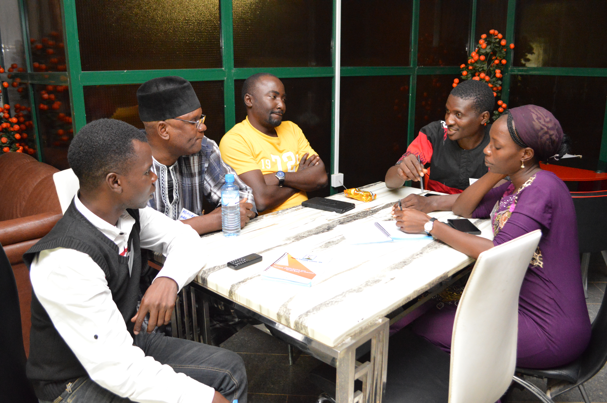
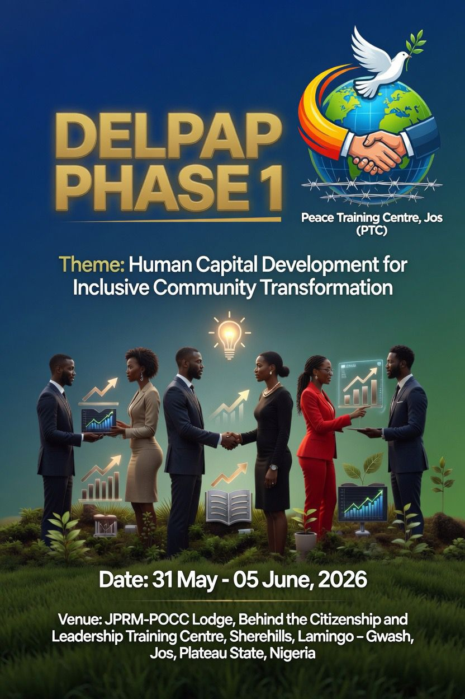
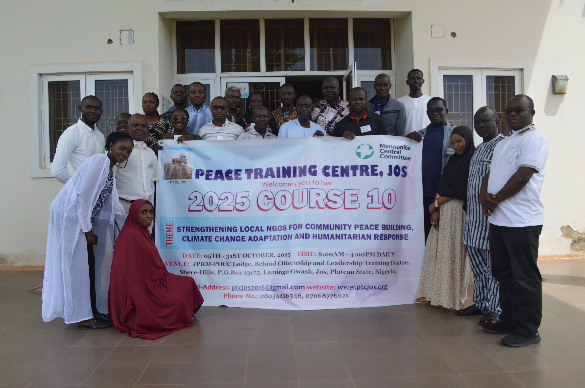

Building Peace, Transforming Lives
A capacity development centre for peace, justice, leadership and community engagement, fostering a culture of peace and understanding in Nigeria.
8
Years of Service
400
Peace Agents Trained
15
Annual Courses
50
Partnerships
Who We Are
We are a Peace Training Centre, non-governmental, non-political and non-religious affiliated organization, which was established in 2016 by members of African Peace Institute (API) and West African Peace Institute (WAPI) Alumni Association of Nigeria (AWAAN) in partnership with Mennonite Central Committee (MCC) – Nigeria.
A capacity development centre for peace, justice, leadership and community engagement

Building capacity for peace since 2016
✨ DELPAP PHASE 1 ✨

Theme
Human Capital Development for Sustainable Peace
Date
31st May – 5th June, 2026
⏰ Deadline: 25th May, 2026Venue
JPRM-POCC Lodge, Behind the Citizenship and Leadership Training Centre, Shere Hills, Lamingo-Gwash, Jos, Plateau State, Nigeria
Who Can Apply?
🌟 What You Will Gain
Be part of a transformative movement for peace and development.
Apply/Register now to secure your spot!
Strategic Plan 2026-2031
A five-year roadmap to sustainable peace, justice, leadership and community engagement
Our Identity
A capacity development centre for peace, justice, leadership and community engagement.
Our Vision
An equipped Centre of excellence in a peaceful and resilient society.
Our Mission
To foster a culture of peace and understanding in Nigeria by strengthening community capacities through research, advocacy and inclusive dialogue in resolving conflicts for a harmonious living.
Our Core Values
Our Strategic Thematic Areas
Capacity Development
Strengthening PTC capacity and operational systems
Institutional Strengthening
Enhancing organisational systems and service delivery
Resource Mobilization
Diversified and sustained resource base
Environmental Protection
Improved human life in a sustained environment
Social Protection & Livelihood
Community well-being strengthened and people empowered
Strategic Activities
Strategic Approaches
Key Result Areas
Peace Agents Trained
Years Strategic Plan
Plan Period
Implementation Timeline
Board Meetings
Strategic gatherings shaping the future of peace building
Our Key Activities
Major programs and initiatives we conduct

Annual Peace Training
Conducted every October with specialized weekly modules on various peace-building topics.

Interdenominational Church Leaders Workshop
Capacity building for church leaders on conflict transformation and peace building.

DELPAP Program
Development Education Leadership and Peace Awareness Program with 4 progressive phases.